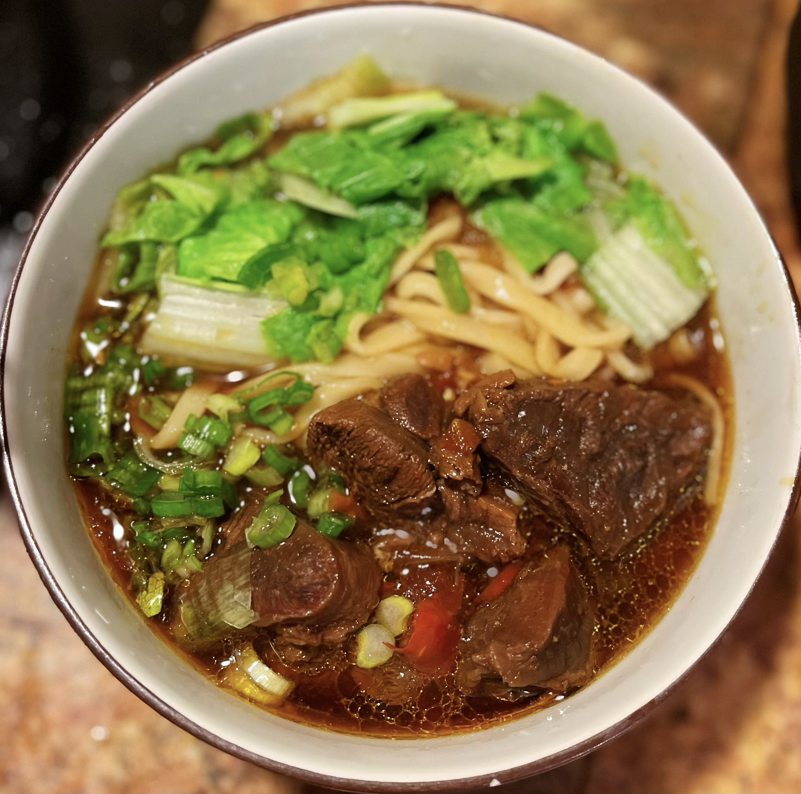
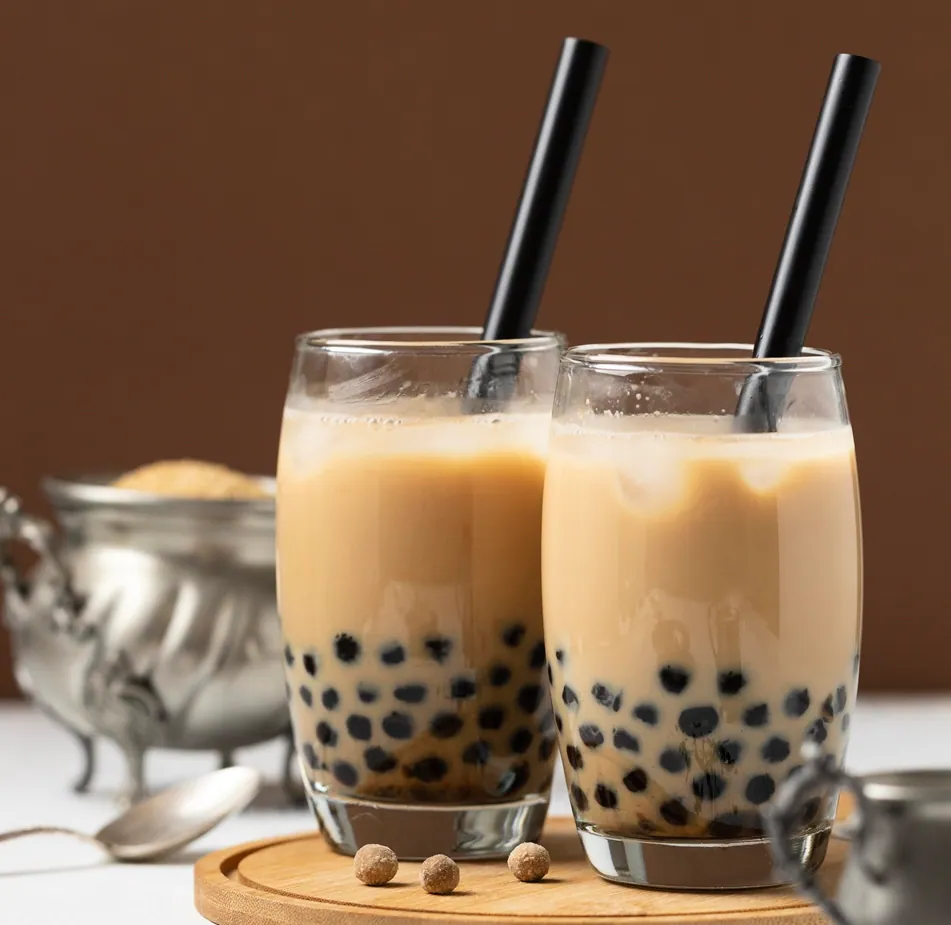
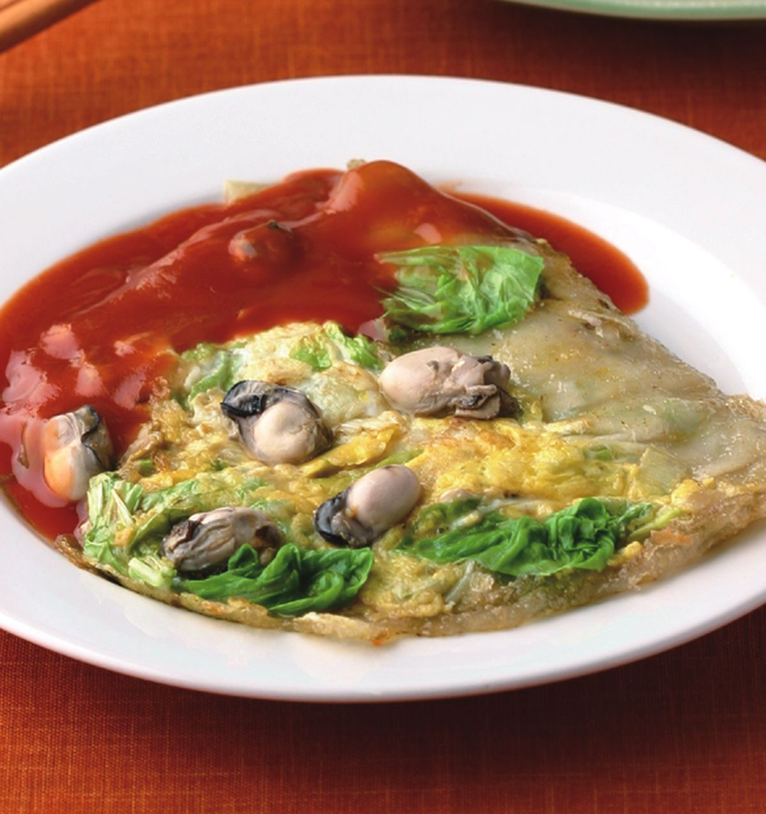

美食介紹
台灣的小吃種類多、價格親民，夜市更是美食的聚集地。 想規劃旅遊，可以參考 台灣觀光資訊網。
點選圖片看介紹

牛肉麵

珍珠奶茶

蚵仔煎

小籠包
美食整理表
| 美食 | 類型 | 特色 | 延伸閱讀 |
|---|---|---|---|
| 牛肉麵 | 麵食 | 湯頭濃郁，牛肉軟嫩 | 愛料理：紅燒牛肉麵 |
| 珍珠奶茶 | 飲品 | 奶茶加入Q彈粉圓 | 來好：珍珠奶茶冷知識 |
| 蚵仔煎 | 小吃 | 蚵仔、蛋、粉漿煎成，淋甜辣醬 | 楊桃美食網：蚵仔煎 |
| 小籠包 | 點心 | 薄皮包肉餡與湯汁 | Cookidoo：古早味小籠包 |
美食影片
美食小測驗
共 4 題，每題答對得 25 分，每題只能作答一次。
第 1 題：哪一種美食的特色是「奶茶加入Q彈粉圓」？
第 2 題：蚵仔煎通常會淋上哪一種醬料？
第 3 題：小籠包的特色是什麼？
第 4 題：下列哪一項屬於「麵食」類型？
這是台灣美食嗎？
沒收錄在清單中，不代表一定不是台灣美食。